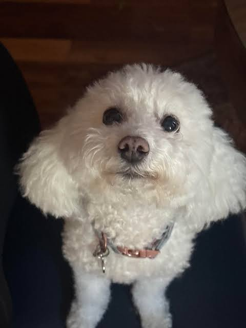
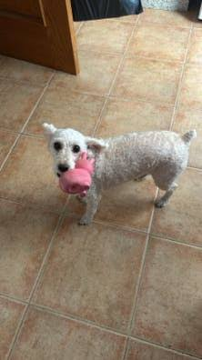
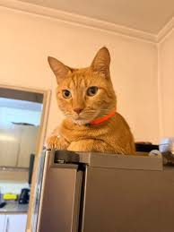
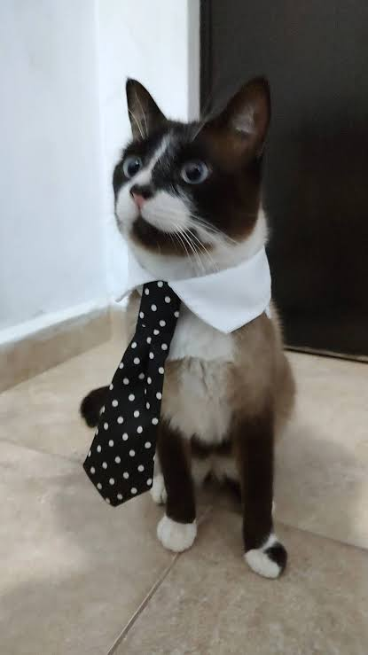
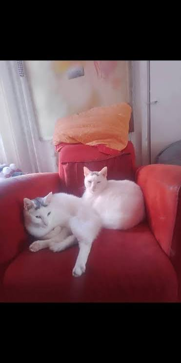

Perritos en busca de hogar



Los perritos son cariñosos y buenos compañeros. Necesitan paseos, alimento, agua y atención veterinaria.
Gatitos en busca de hogar



Los gatitos son tiernos y necesitan un espacio seguro, alimento, higiene y mucho cariño.
Antes de adoptar
Debemos estar seguros de poder cuidar a la mascota durante toda su vida y ofrecerle un hogar responsable.